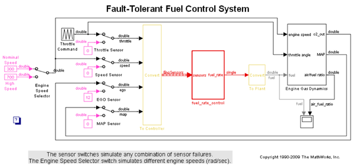
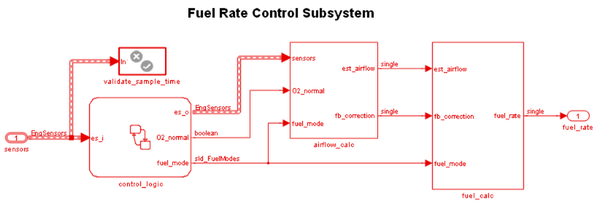
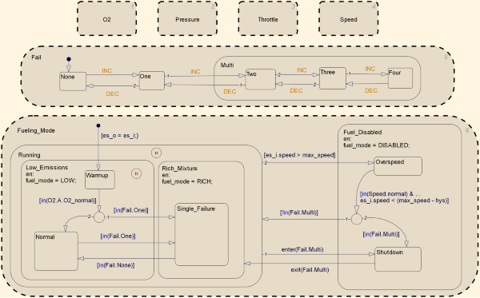
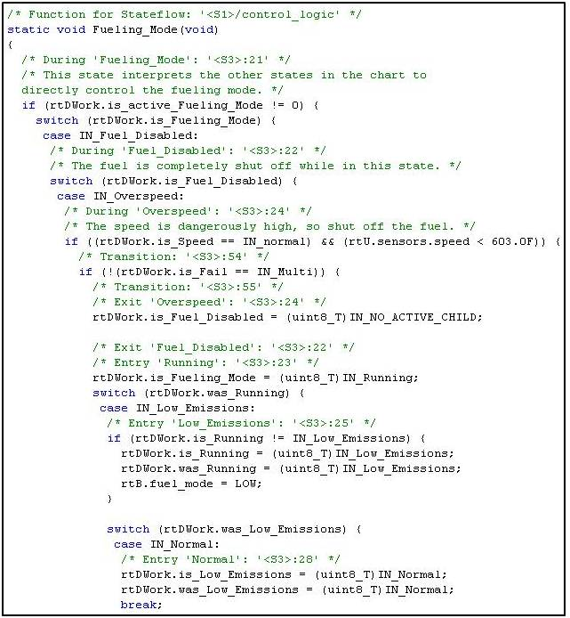

Simulink と Stateflow の制御と論理設計
このデモでは、Simulink® と Stateflow® を使用して設計された燃料比制御装置のコードを生成します。モデルの詳細は、sldemo_fuelsys を参照してください。
目次
モデルの関連部分の理解
図 1 ～ 4 は、"プラント" と "コントローラー" を含む閉ループ システムである sldemo_fuelsys モデルの関連部分を示しています。プラントは、設計の初期段階でのシミュレーション時にコントローラーを検証するために使用します。この例では、関連するコントローラー サブシステム "fuel_rate_control" のコードを生成します。図 1 は、最上位のシミュレーション モデルを示しています。
% open sldemo_fuelsys via rtwdemo_fuelsys and compile the diagram to see % see the signal data types. rtwdemo_fuelsys sldemo_fuelsys([],[],[],'compile'); sldemo_fuelsys([],[],[],'term');
図 1:"プラント" と "コントローラー" の最上位モデル
燃料比制御装置は Simulink および Stateflow ブロックで構成されており、これからコードを生成するモデルの一部分です。
open_system('sldemo_fuelsys/fuel_rate_control');
 図 2:燃料比コントローラー サブシステム
制御ロジックは、さまざまな動作モードを指定する Stateflow チャートです。
open_system('sldemo_fuelsys/fuel_rate_control/control_logic');
 図 3:燃料比コントローラー ロジック
ここで、たくさん表示されているウィンドウを閉じましょう。
close_system('sldemo_fuelsys/fuel_rate_control/airflow_calc'); close_system('sldemo_fuelsys/fuel_rate_control/fuel_calc'); close_system('sldemo_fuelsys/fuel_rate_control/control_logic'); hDemo.rt=sfroot;hDemo.m=hDemo.rt.find('-isa','Simulink.BlockDiagram'); hDemo.c=hDemo.m.find('-isa','Stateflow.Chart','-and','Name','control_logic'); hDemo.c.visible=false; close_system('sldemo_fuelsys/fuel_rate_control');
Real-Time Workshop の使用によるモデルの設定とビルド
Real-Time Workshop® と Stateflow Coder™ により、Generic Real-Time (GRT) ターゲットを介して Simulink および Stateflow モデルの一般的な ANSI-C コードが生成されます。コード生成のためのモデルの設定は、プログラムで実行できます。
rtwconfiguredemo('sldemo_fuelsys','GRT');
この例で、燃料比制御装置のみをビルドしましょう。コード生成処理が完了すると、生成コードの詳細を示す HTML 形式のレポートが自動的に表示されます。コードの本体部分は fuel_rate_control.c にあります。
rtwbuild('sldemo_fuelsys/fuel_rate_control');
### Starting Real-Time Workshop build procedure for model:fuel_rate_control ### Successful completion of Real-Time Workshop build procedure for model:fuel_rate_control
Real-Time Workshop Embedded Coder の使用によるモデルの設定とビルド
Real-Time Workshop Embedded Coder を使用して、Embedded Real-Time (ERT) ターゲットを介して量産 ANSI-C/C++ コードが生成されます。コード生成のためのモデルの設定は、プログラムで実行できます。
rtwconfiguredemo('sldemo_fuelsys','ERT');
ビルド プロセスを繰り返し、生成されたコードを調べます。図 4 は、生成された制御ロジックの一部を示しています。関連するコード セグメントに Real-Time Workshop Report で対話形式で移動できます。(Stateflow ブロックを右クリックして) チャートのコンテキスト メニューから [Real-Time Workshop] > [コードに移動...] と選択し、[戻る] または [次へ] ボタンをクリックします。または、rtwtrace ユーティリティを使用してプログラムで移動します。
rtwbuild('sldemo_fuelsys/fuel_rate_control'); rtwtrace('sldemo_fuelsys/fuel_rate_control/control_logic')
### Starting Real-Time Workshop build procedure for model:fuel_rate_control ### Successful completion of Real-Time Workshop build procedure for model:fuel_rate_control

図 4:燃料比コントローラー ロジックの生成コードの一部
デモを閉じます。
clear hDemo close_system('sldemo_fuelsys',0);
おわりに
sldemo_fuelsys を使用する関連の固定小数点デモについては、表 1 を参照してください。
| 固定小数点設計 | fxpdemo_fuelsys |
| 固定小数点の本番用 C/C++ コード生成 | rtwdemo_fuelsys_fxp |
表 1: sldemo_fuelsys を使用した関連製品のデモ